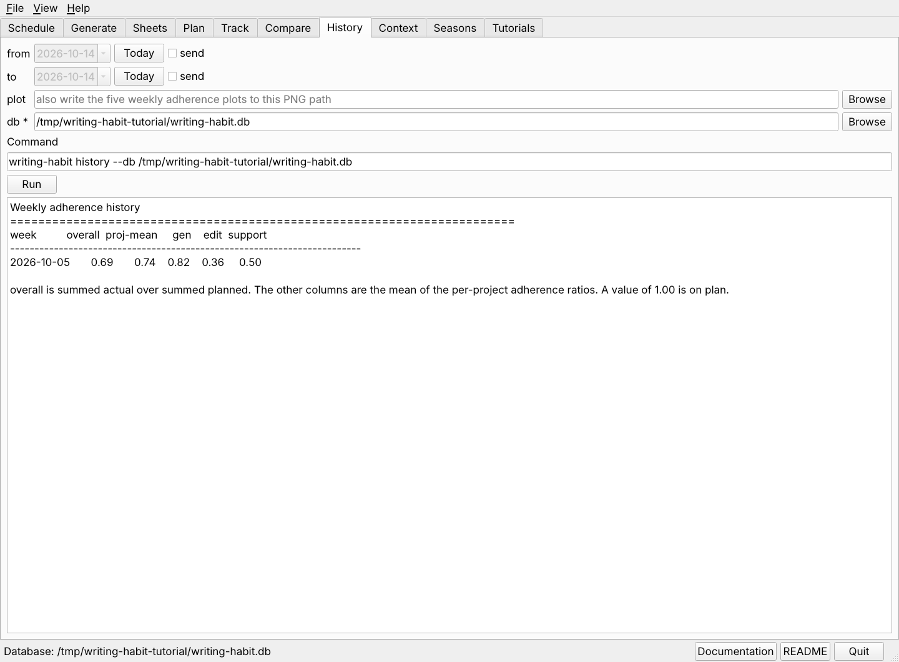

One week says little. Three tools look across weeks, and they become useful once a month or so of weeks has been imported.

writing-habit history --db ~/org/writing-habit.db writing-habit history --from 2026-09-01 --plot trend.png --db ~/org/writing-habit.db
Tag a week with what shaped it, such as teaching,
meeting, travel, or data-collection. A tag
takes one run now and explains a bad week a year from now.
Open the Context tab, choose context set, give the week and the tag, and press Run.
writing-habit context set --week 2026-10-05 --tag meeting \
--note "ABRF short course" --db ~/org/writing-habit.db
writing-habit context list --db ~/org/writing-habit.db
The seasons dashboard groups weeks by month, by context tag, and by the schedule code in the table's file name, so you can see which kinds of weeks and which plan shapes you keep.
Open the Seasons tab, choose seasons, set out, and press Run.
writing-habit seasons --out ~/org/dashboards/seasons.html --db ~/org/writing-habit.db